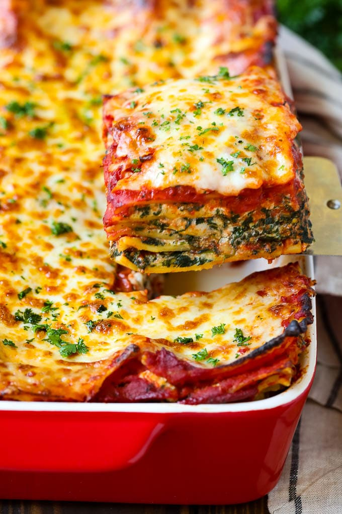

Spinach Lasagna

Description
A spinach lasagna recipe made with fresh spinach and plenty of cheese
ricotta, romano and mozzarella. This cheesy, hearty lasagna can also be made
without the spinach
Ingredients
- 15 lasagna noodles
- 2 tablespoons olive oil
- 1 cup chopped fresh mushrooms
- 1 cup chopped onions
- 1 tablespoon minced garlic
- 2 cups fresh spinach
- 3 cups ricotta cheese
- 1 cup grated romano cheese
- 1 egg
- 1 teaspoon salt
- 1 teaspoon dried oregano
- 1 teaspoon basil leaves
- 1 teaspoon black pepper
- 3 cups shredded mozzarella cheese
- 3 cups tomato pasta sauce
- 1 cup grated parmesan cheese
Steps
- Preheat the oven to 350 degrees F (175 degrees C).
- Bring a large pot of lightly salted water to a boil. Add lasagna noodles and cook
for 8 to 10 minutes or until al dente; drain.
- Meanwhile, heat olive oil in a skillet over medium-high heat. Add mushrooms,
onions, and garlic and cook until onions are tender; drain excess liquid and cool.
- At the same time, bring a small pot of water to a boil; add spinach and simmer
for 5 minutes. Drain and cool slightly; squeeze out any excess liquid and finely chop.
- Combine ricotta cheese, Romano cheese, egg, salt, oregano, basil, and pepper in
a bowl. Add cooled mushroom mixture and spinach; beat with an electric mixer
on low speed for 1 minute.
- Lay 5 lasagna noodles in the bottom of a 9x13-inch baking dish. Spread 1/3 of
the ricotta-spinach mixture over noodles, then sprinkle with 1 cup mozzarella
cheese and 1/3 cup Parmesan cheese. Spread 1 cup pasta sauce over top.
Repeat layers two more times, then cover with aluminum foil.
- Bake in the preheated oven for 1 hour. Cool 15 minutes before serving.